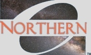
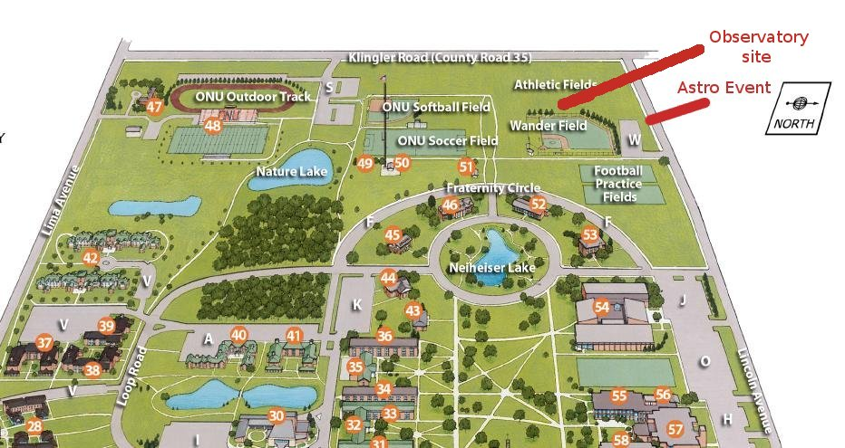
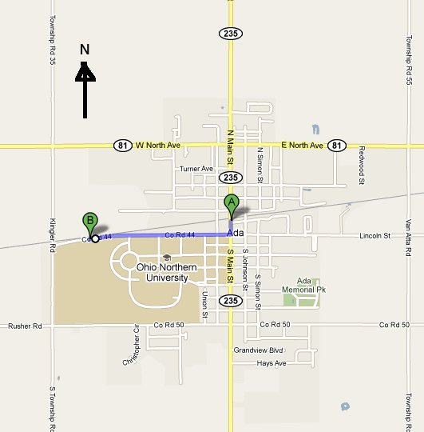
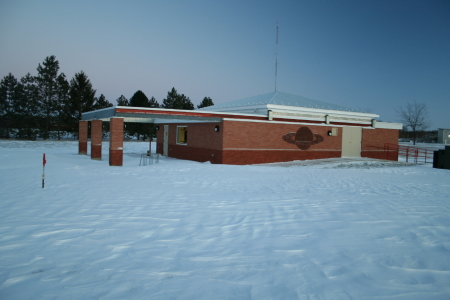
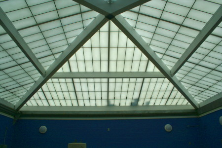
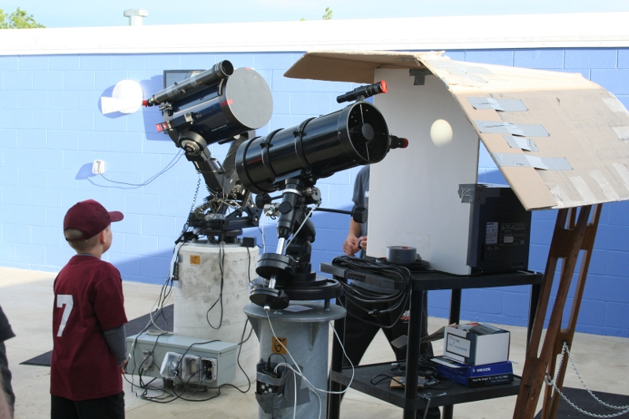
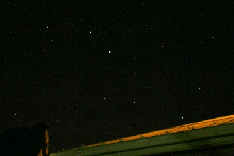
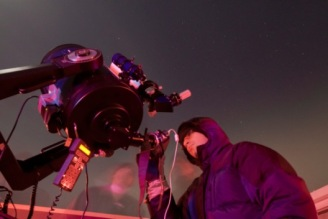

|  |
ONU Astronomy Observatory |
The ONU Observatory has a mission
to educate and inspire the
students of Ohio Northern University, as well as the surrounding
community, about the rapidly evolving and exciting science of
astronomy.
The ONU Observatory has been in planning since
about 2003, while its construction occurred between March and
September,
2010. The observatory
is primarily used by ONU students in physics and astronomy
classes, faculty, and by the ONU Astronomy Club.
However, it is also opened up for
public events on a semi-regular basis.
The ONU Observatory is located on the Northwest side of campus (see maps). Parking is located in the Wander Baseball Field lot just off of Lincoln Avenue.
|
ONU campus map (N is right).  |
Ada map (N is up).  |
Interactive Ada map (N is up). |
ONU campus map showing astronomy viewing site (in red):
Map of Ada, OH showing astronomy viewing site (marker B).
NOTE: before coming to the observatory, check for cancellations on our public events page.
|
Other Pictures The ONU Observatory in December 2010. Although the control room (left end) and bathrooms (right end) are
heated in the winter, the main observing room (middle section) is
not. So dress warmly when you visit in winter!  The interior of the observatory showing the translucent panels of the roll-off roof.  During the 2012 transit of Venus across the Sun we had several ways to observe the Sun without hurting our eyes.  The Big Dipper (Ursa Major) visible from inside of the observatory with the roof rolled back.  ONU student using a camera on the 12" Meade during an event in the winter of 2011. (Photo courtesy Ken Colwell.) |
|
Contact Dr. J. Pinkney, Manager, Associate Professor of Physics and Astronomy. j-pinkney@onu.edu Office: 419-772-2740 Observatory: 419-772-4028 Science Annex 111 Pinkney's Homepage | Related Links Return to ONU PhysicsONU Observatory Public Events ONU Astronomy Image Gallery Return to ONU |
{kind=link}
{kind=link}
{kind=link}